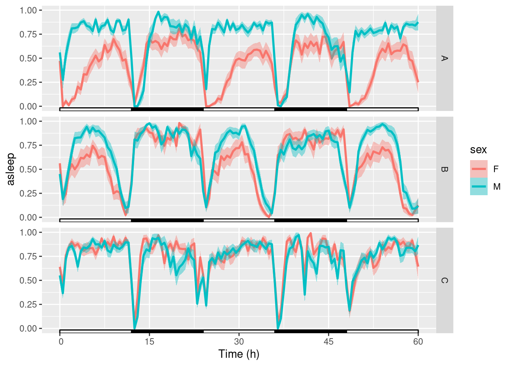
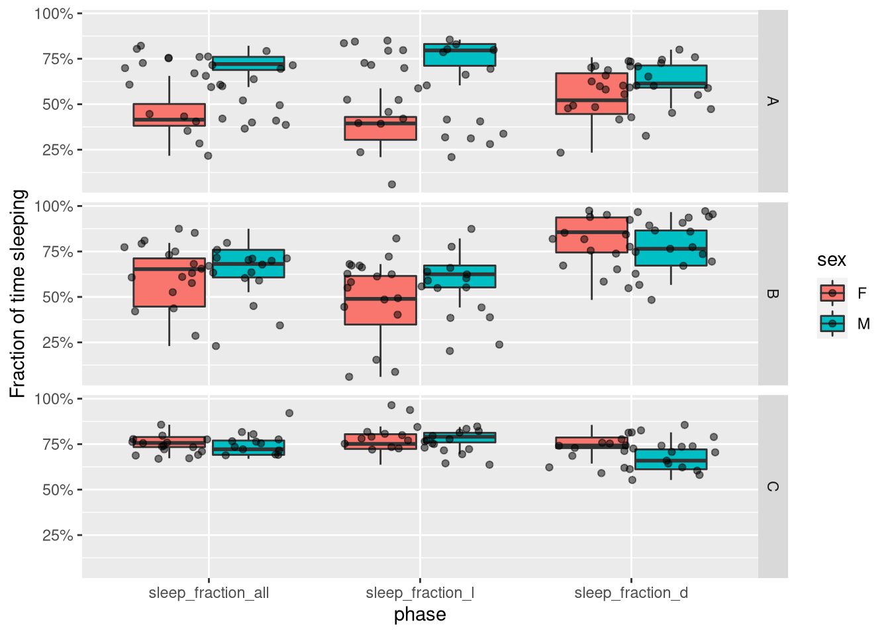
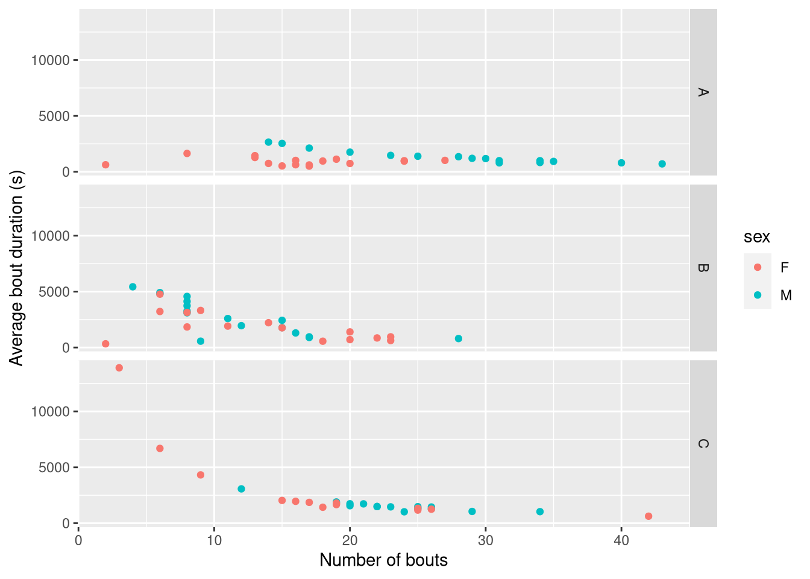

Sleep analysis
Aims
In this practical chapter, we will use a real experiment to learn how to:
- Annotate a behavr table with sleep state
- Use ggetho to display individual and population sleep amounts
- Compute average sleep within a time window
- Perform standard statistics on average sleep
- Analyse sleep architecture, sleep latency,…
Prerequisites
- You have read about behavr tables
- You are familiar with ggetho, our vidualisation tool
- You have already read the damr tutorial
- Ensure you have installed
behavr,damrandggethopackages:
Background
This tutorial focused on sleep in Drosophila. Traditionally, activity is first scored (e.g. through beam crosses/video tracking). Then any bouts of inactivity longer than five minutes count as sleep. You can easily adapt this tutorial to scoring other models/behaviours as long as you can define two discrete states (e.g. sleep vs asleep, moving vs immobile, left vs right, …).
In the DAM tutorial, we have learnt how to load data from a real DAM expriment. Since we already described it in length, it makes sense to use this experiment as an example for our sleep analysis. I will assume that you have already read and understood the DAM tutorial. The last thing we did then was loading data and scoring sleep:
library(sleepr)
dt <- load_dam(metadata, FUN = sleepr::sleep_dam_annotation)
dtGetting the data
Instead of going through the whole damr tutorial again, I thought I would put the resulting data table online.
Importantly, for simplicity, I have just kept replicate 1.
We just need to download it and load it:
library(sleepr)
library(ggetho)
URL <- "https://github.com/rethomics/rethomics.github.io/raw/source/material/sleep_dam.RData"
load(url(URL))
summary(dt)## behavr table with:
## 96 individuals
## 8 metavariables
## 4 variables
## 3.68736e+05 measurements
## 1 key (id)Data curation
First of all, lets visualise all our sleep data. It is important to pay critical attention to this graph in order to assess if anything has gone wrong:
ggetho(dt, aes(z=asleep)) +
stat_ld_annotations(height = 1)+
stat_tile_etho() 
Dead animals
Some animals may have died during the experiment, and could be wrongly scored as asleep for very long durations.
sleepr has an utility function to remove data from dead animals:
# we give our curated data another name so we can see the difference
dt_curated <- curate_dead_animals(dt)
summary(dt_curated)## behavr table with:
## 95 individuals
## 8 metavariables
## 4 variables
## 3.57436e+05 measurements
## 1 key (id)As you can see, we now have 95 individuals vs 96 in the original data. To see which animals have been removed, we could run something like:
setdiff(dt[, id, meta=T],
dt_curated[, id, meta=T])## [1] "2017-07-01 08:00:00|Monitor64.txt|26"Indeed, from the tile plot nothing seem to have happened in this channel. Now let us look at the data after curation:
ggetho(dt_curated, aes(z=asleep)) +
stat_ld_annotations(ypos = "top")+
stat_tile_etho() 
Animals that died too early
In addition, we could want to, for instance, remove animals that did not live say longer than 2 days.
Of course, you need to have a good reason to exclude some animals, and that depends on your specific experiment (this is just showing you how to do it).
To remove animals that did not live longer that 2 days, we use the power of behavr tables:
# we make a summary table of all lifespan for each animals
lifespan_dt <- dt_curated[, .(lifespan = max(t)), by=id]
# we filter this table for lifespan>2 and we keep the id
valid_ids <- lifespan_dt[lifespan > days(2), id]
# we apply this filter
dt_curated <- dt_curated[id %in% valid_ids]
summary(dt_curated)## behavr table with:
## 94 individuals
## 8 metavariables
## 4 variables
## 3.54923e+05 measurements
## 1 key (id)Trimming
Generally, we want to remove a point according the experimental time. For instance, lets say we would like to keep only the first 60 hours of data (i.e. 2.5 days)
dt_curated <- dt_curated[t %between% c(days(0), days(2.5))]
summary(dt_curated)## behavr table with:
## 94 individuals
## 8 metavariables
## 4 variables
## 3.38494e+05 measurements
## 1 key (id)Which means we are only considering data between 0 and 2.5 days.
The same principle can be used to remove the beginning of an experiment. For instance, when animals are acclimatising to their new environment.
Population plots
Now that we have curated our data, we can start looking at the biology. First, we make a global population plot:
ggetho(dt_curated, aes(y=asleep, colour=sex)) +
stat_pop_etho() +
stat_ld_annotations() +
facet_grid(genotype ~ .)
The y axis shows the proportion of time sent sleeping, averaged for each animal within a 30min (default) time window.
Then, we can wrap (average) that over one day. We also polish the y axis label:
ggetho(dt_curated, aes(y=asleep, colour=sex), time_wrap = hours(24)) +
stat_pop_etho() +
stat_ld_annotations() +
facet_grid(genotype ~ .) +
scale_y_continuous(name= "Fraction of time sleeping",labels = scales::percent)
That gives us a good understanding of what happens at the population level.
Summarise data per animal
Most likely, we want to summarise sleep amount so that we have one number per animal. For instance, we can compute the overall average proportion of time spent sleeping:
summary_dt <-
rejoin(dt_curated[,
.(
# this is where the computation happens
sleep_fraction = mean(asleep)
),
by=id])
summary_dt## id file_info region_id
## 1: 2017-07-01 08:00:00|Monitor11.txt|01 <list[2]> 1
## 2: 2017-07-01 08:00:00|Monitor11.txt|02 <list[2]> 2
## 3: 2017-07-01 08:00:00|Monitor11.txt|03 <list[2]> 3
## 4: 2017-07-01 08:00:00|Monitor11.txt|04 <list[2]> 4
## 5: 2017-07-01 08:00:00|Monitor11.txt|05 <list[2]> 5
## ---
## 90: 2017-07-01 08:00:00|Monitor64.txt|27 <list[2]> 27
## 91: 2017-07-01 08:00:00|Monitor64.txt|29 <list[2]> 29
## 92: 2017-07-01 08:00:00|Monitor64.txt|30 <list[2]> 30
## 93: 2017-07-01 08:00:00|Monitor64.txt|31 <list[2]> 31
## 94: 2017-07-01 08:00:00|Monitor64.txt|32 <list[2]> 32
## experiment_id start_datetime stop_datetime sex
## 1: 2017-07-01 08:00:00|Monitor11.txt 2017-07-01 08:00:00 2017-07-04 M
## 2: 2017-07-01 08:00:00|Monitor11.txt 2017-07-01 08:00:00 2017-07-04 M
## 3: 2017-07-01 08:00:00|Monitor11.txt 2017-07-01 08:00:00 2017-07-04 M
## 4: 2017-07-01 08:00:00|Monitor11.txt 2017-07-01 08:00:00 2017-07-04 M
## 5: 2017-07-01 08:00:00|Monitor11.txt 2017-07-01 08:00:00 2017-07-04 M
## ---
## 90: 2017-07-01 08:00:00|Monitor64.txt 2017-07-01 08:00:00 2017-07-04 F
## 91: 2017-07-01 08:00:00|Monitor64.txt 2017-07-01 08:00:00 2017-07-04 F
## 92: 2017-07-01 08:00:00|Monitor64.txt 2017-07-01 08:00:00 2017-07-04 F
## 93: 2017-07-01 08:00:00|Monitor64.txt 2017-07-01 08:00:00 2017-07-04 F
## 94: 2017-07-01 08:00:00|Monitor64.txt 2017-07-01 08:00:00 2017-07-04 F
## genotype replicate sleep_fraction
## 1: A 1 0.7600666
## 2: A 1 0.7550680
## 3: A 1 0.8214385
## 4: A 1 0.7528464
## 5: A 1 0.8044988
## ---
## 90: C 1 0.7661761
## 91: C 1 0.6725909
## 92: C 1 0.7622883
## 93: C 1 0.7967231
## 94: C 1 0.9208553With rejoin, we have put our summary and metadata together, which is suitable for standars graphics/statictics.
For instance, if we are interested in the effect of sleep and genotype on sleep amount, we can make a faceted boxplot, and also add individual points to show all data.
ggplot(summary_dt, aes(x=sex, y=sleep_fraction, fill=sex)) +
geom_boxplot(outlier.colour = NA) +
geom_jitter(alpha=.5) +
facet_grid( genotype ~ .) +
scale_y_continuous(name= "Fraction of time sleeping",labels = scales::percent)
Day sleep☼ – Night sleep☾
Often, we want to compare amount of sleep during the day vs night as they are different processes.
Adding some phase information
The simplest way to do that is to start by adding some phase information to our data.
- L phase (light) should be any point between ZT0 and ZT12 – [0,12), [24,36), …
- D phase (dark) should be any point between ZT12 and ZT24 – [12,24), [36,48), …
Numerically, this can be done very simply using a modulo operation on time. In R, modulo is %%.
The following line creates a new variable in dt. This variable is:
"L"when the remainder of the division of (the corresponding)tby 24h is lower than 12h"D"otherwise
dt_curated[, phase := ifelse(t %% hours(24) < hours(12), "L", "D")]Since we have this column, we can make an improved summary (pay special attention to the last columns):
summary_dt <-
rejoin(dt_curated[,
.(
# this is where the computation happens
sleep_fraction_all = mean(asleep),
sleep_fraction_l = mean(asleep[phase == "L"]),
sleep_fraction_d = mean(asleep[phase == "D"])
),
,by=id])
summary_dt## id file_info region_id
## 1: 2017-07-01 08:00:00|Monitor11.txt|01 <list[2]> 1
## 2: 2017-07-01 08:00:00|Monitor11.txt|02 <list[2]> 2
## 3: 2017-07-01 08:00:00|Monitor11.txt|03 <list[2]> 3
## 4: 2017-07-01 08:00:00|Monitor11.txt|04 <list[2]> 4
## 5: 2017-07-01 08:00:00|Monitor11.txt|05 <list[2]> 5
## ---
## 90: 2017-07-01 08:00:00|Monitor64.txt|27 <list[2]> 27
## 91: 2017-07-01 08:00:00|Monitor64.txt|29 <list[2]> 29
## 92: 2017-07-01 08:00:00|Monitor64.txt|30 <list[2]> 30
## 93: 2017-07-01 08:00:00|Monitor64.txt|31 <list[2]> 31
## 94: 2017-07-01 08:00:00|Monitor64.txt|32 <list[2]> 32
## experiment_id start_datetime stop_datetime sex
## 1: 2017-07-01 08:00:00|Monitor11.txt 2017-07-01 08:00:00 2017-07-04 M
## 2: 2017-07-01 08:00:00|Monitor11.txt 2017-07-01 08:00:00 2017-07-04 M
## 3: 2017-07-01 08:00:00|Monitor11.txt 2017-07-01 08:00:00 2017-07-04 M
## 4: 2017-07-01 08:00:00|Monitor11.txt 2017-07-01 08:00:00 2017-07-04 M
## 5: 2017-07-01 08:00:00|Monitor11.txt 2017-07-01 08:00:00 2017-07-04 M
## ---
## 90: 2017-07-01 08:00:00|Monitor64.txt 2017-07-01 08:00:00 2017-07-04 F
## 91: 2017-07-01 08:00:00|Monitor64.txt 2017-07-01 08:00:00 2017-07-04 F
## 92: 2017-07-01 08:00:00|Monitor64.txt 2017-07-01 08:00:00 2017-07-04 F
## 93: 2017-07-01 08:00:00|Monitor64.txt 2017-07-01 08:00:00 2017-07-04 F
## 94: 2017-07-01 08:00:00|Monitor64.txt 2017-07-01 08:00:00 2017-07-04 F
## genotype replicate sleep_fraction_all sleep_fraction_l sleep_fraction_d
## 1: A 1 0.7600666 0.8500000 0.6252602
## 2: A 1 0.7550680 0.7861111 0.7085357
## 3: A 1 0.8214385 0.8356481 0.8001388
## 4: A 1 0.7528464 0.8555556 0.5988897
## 5: A 1 0.8044988 0.8444444 0.7446218
## ---
## 90: C 1 0.7661761 0.7504630 0.7897294
## 91: C 1 0.6725909 0.6370370 0.7258848
## 92: C 1 0.7622883 0.7523148 0.7772380
## 93: C 1 0.7967231 0.7773148 0.8258154
## 94: C 1 0.9208553 0.9643519 0.8556558Now, we have three new variables: sleep_fraction_all, sleep_fraction_l and sleep_fraction_d.
We can just replace the y axis with our variable of interest (e.g. sleep in D phase):
ggplot(summary_dt, aes(x=sex, y=sleep_fraction_d, fill=sex)) +
geom_boxplot(outlier.colour = NA) +
geom_jitter(alpha=.5) +
facet_grid(genotype ~ .) +
scale_y_continuous(name= "Fraction of time sleeping",labels = scales::percent)
If we wanted a plot with all three values, we could “melt” our data,
picking all columns starting with "sleep_fraction_" as “measurment variables”:
summary_dt_melted <- melt(summary_dt, measure.vars = patterns("sleep_fraction_"),
variable.name = "phase", value.name = "sleep_fraction")Now, instead of three columns for the three variables, we have two columns, one for the actual value and one to describe the phase (all vs L vs D). This makes it convenient to use with ggplot:
ggplot(summary_dt_melted, aes(x=phase, y=sleep_fraction, fill=sex)) +
geom_boxplot(outlier.colour = NA) +
geom_jitter(alpha=.5) +
facet_grid(genotype ~ .) +
scale_y_continuous(name= "Fraction of time sleeping",labels = scales::percent)
Statistics
Often, you want to go further than representing the data, and compute statistics.
R was designed primarilly as statistical progamming language.
As a result, a tremendous variety of simple and elaborate statics are implemented.
This section will not go in the details of what you can do in terms of stats, many authors have already published fantastic resources on this subject.
Instead, we present very simple examples of what can be done.
At this stage, what you do depends very much on your question, your knowledge of statistics and how much effort you
want to invest.
Pairwise Wilcoxon tests
Say we wanted to compute, for females only, all pairwise tests between all genotype groups (A vs B, B vs C and C vs A). This could be formulated as:
pairwise.wilcox.test(summary_dt[sex=="F", sleep_fraction_all],
summary_dt[sex=="F", genotype])## Warning in wilcox.test.default(xi, xj, paired = paired, ...): cannot compute
## exact p-value with ties
## Warning in wilcox.test.default(xi, xj, paired = paired, ...): cannot compute
## exact p-value with ties##
## Pairwise comparisons using Wilcoxon rank sum test with continuity correction
##
## data: summary_dt[sex == "F", sleep_fraction_all] and summary_dt[sex == "F", genotype]
##
## A B
## B 0.0047 -
## C 4.1e-08 0.0018
##
## P value adjustment method: holmWe get a matrix showing us all p-values.
You could do that also within males, as long as we replace sex == "F" by sex == "M"
Two way anova
If we are interested in the effect of sex AND genotype, as well as their interaction,
we can model our response variable with a formula: sleep_fraction_all ~ sex * genotype:
model <- aov(sleep_fraction_all ~ sex * genotype, summary_dt)
summary(model)## Df Sum Sq Mean Sq F value Pr(>F)
## sex 1 0.3235 0.3235 26.39 1.66e-06 ***
## genotype 2 0.4417 0.2209 18.02 2.76e-07 ***
## sex:genotype 2 0.3874 0.1937 15.80 1.37e-06 ***
## Residuals 88 1.0786 0.0123
## ---
## Signif. codes: 0 '***' 0.001 '**' 0.01 '*' 0.05 '.' 0.1 ' ' 1This shows a strong affect of sex, genotype and their interaction on sleep amount. There are several way to follow up. For instance see this short tutorial.
Sleep architecture
Proportion alone is not always a sufficent measure to fully descibe the dynamics of sleep. One way to go further is to study sleep as a series of bouts.
Bout analysis
The function bout_analysis(), in sleepr is designed for that.
We would use it like that:
bout_dt <- bout_analysis(asleep, dt_curated)The result is a new behavr table, with a few differences compared to the ones we used before:
- Each row in the data describes a bout
- The bout can take the values
asleep=TRUEorasleep=FALSE(sleep bout or wake bout, respectively) tis the onset of the bout (in seconds)durationis length of the bout (in seconds)
Note that you can use this function to study bouts of other discrete behaviours.
For now, we are only interested in sleep bout, so we filter for asleep == TRUE.
We also remove the, now redundant, asleep column:
bout_dt <- bout_dt[asleep == TRUE, -"asleep"]Bout length vs time of the day
We can use ggetho to show how the average bout length depends on the time of the onset of the bout.
ggetho(bout_dt, aes(y=duration / 60, colour=sex), time_wrap = hours(24)) +
stat_pop_etho() +
facet_grid(genotype ~ .) +
scale_y_continuous(name= "Bout length (min)")
Note that this is a bit noisy as we only have a few animals per combination of treatment.
Architecture description
One can count the total number of bouts and average bout duration for each individual like so:
bout_dt[,
.(n_bouts = .N,
mean_bout_length = mean(duration)),
by=id]##
## ==== METADATA ====
##
## id file_info region_id
## <fctr> <list> <int>
## 1: 2017-07-01 08:00:00|Monitor11.txt|01 <list[2]> 1
## 2: 2017-07-01 08:00:00|Monitor11.txt|02 <list[2]> 2
## 3: 2017-07-01 08:00:00|Monitor11.txt|03 <list[2]> 3
## 4: 2017-07-01 08:00:00|Monitor11.txt|04 <list[2]> 4
## 5: 2017-07-01 08:00:00|Monitor11.txt|05 <list[2]> 5
## ---
## 90: 2017-07-01 08:00:00|Monitor64.txt|27 <list[2]> 27
## 91: 2017-07-01 08:00:00|Monitor64.txt|29 <list[2]> 29
## 92: 2017-07-01 08:00:00|Monitor64.txt|30 <list[2]> 30
## 93: 2017-07-01 08:00:00|Monitor64.txt|31 <list[2]> 31
## 94: 2017-07-01 08:00:00|Monitor64.txt|32 <list[2]> 32
## experiment_id start_datetime stop_datetime sex
## <char> <POSc> <char> <char>
## 1: 2017-07-01 08:00:00|Monitor11.txt 2017-07-01 08:00:00 2017-07-04 M
## 2: 2017-07-01 08:00:00|Monitor11.txt 2017-07-01 08:00:00 2017-07-04 M
## 3: 2017-07-01 08:00:00|Monitor11.txt 2017-07-01 08:00:00 2017-07-04 M
## 4: 2017-07-01 08:00:00|Monitor11.txt 2017-07-01 08:00:00 2017-07-04 M
## 5: 2017-07-01 08:00:00|Monitor11.txt 2017-07-01 08:00:00 2017-07-04 M
## ---
## 90: 2017-07-01 08:00:00|Monitor64.txt 2017-07-01 08:00:00 2017-07-04 F
## 91: 2017-07-01 08:00:00|Monitor64.txt 2017-07-01 08:00:00 2017-07-04 F
## 92: 2017-07-01 08:00:00|Monitor64.txt 2017-07-01 08:00:00 2017-07-04 F
## 93: 2017-07-01 08:00:00|Monitor64.txt 2017-07-01 08:00:00 2017-07-04 F
## 94: 2017-07-01 08:00:00|Monitor64.txt 2017-07-01 08:00:00 2017-07-04 F
## genotype replicate
## <char> <int>
## 1: A 1
## 2: A 1
## 3: A 1
## 4: A 1
## 5: A 1
## ---
## 90: C 1
## 91: C 1
## 92: C 1
## 93: C 1
## 94: C 1
##
## ====== DATA ======
##
## id n_bouts mean_bout_length
## <fctr> <int> <num>
## 1: 2017-07-01 08:00:00|Monitor11.txt|01 80 2052.000
## 2: 2017-07-01 08:00:00|Monitor11.txt|02 109 1496.147
## 3: 2017-07-01 08:00:00|Monitor11.txt|03 97 1829.072
## 4: 2017-07-01 08:00:00|Monitor11.txt|04 95 1711.579
## 5: 2017-07-01 08:00:00|Monitor11.txt|05 59 2945.085
## ---
## 90: 2017-07-01 08:00:00|Monitor64.txt|27 75 2206.400
## 91: 2017-07-01 08:00:00|Monitor64.txt|29 142 1023.380
## 92: 2017-07-01 08:00:00|Monitor64.txt|30 99 1663.636
## 93: 2017-07-01 08:00:00|Monitor64.txt|31 67 2568.358
## 94: 2017-07-01 08:00:00|Monitor64.txt|32 36 5525.000You could apply the approach presented before to compute statistics according the the phase (night vs day bouts).
Latency to sleep
The latency describes how long it takes for an animal to initiate its first sleep bout. Some researchers are also interested in the latency to the longest bout. In this example, lets say we focus on the second day (and not the night – 24 to 36 hours).
bout_dt_second_day <- bout_dt[t %between% c(days(1), days(1) + hours(12))]
# We express t relatively to the first day
bout_dt_second_day[, t:= t - days(1)]
bout_summary <- bout_dt_second_day[,.(
latency = t[1], # the first bout is at t[1]
first_bout_length = duration[1],
latency_to_longest_bout = t[which.max(duration)],
length_longest_bout = max(duration),
n_bouts = .N,
mean_bout_length = mean(duration)
),
by=id]
bout_summary##
## ==== METADATA ====
##
## id file_info region_id
## <fctr> <list> <int>
## 1: 2017-07-01 08:00:00|Monitor11.txt|01 <list[2]> 1
## 2: 2017-07-01 08:00:00|Monitor11.txt|02 <list[2]> 2
## 3: 2017-07-01 08:00:00|Monitor11.txt|03 <list[2]> 3
## 4: 2017-07-01 08:00:00|Monitor11.txt|04 <list[2]> 4
## 5: 2017-07-01 08:00:00|Monitor11.txt|05 <list[2]> 5
## ---
## 89: 2017-07-01 08:00:00|Monitor64.txt|27 <list[2]> 27
## 90: 2017-07-01 08:00:00|Monitor64.txt|29 <list[2]> 29
## 91: 2017-07-01 08:00:00|Monitor64.txt|30 <list[2]> 30
## 92: 2017-07-01 08:00:00|Monitor64.txt|31 <list[2]> 31
## 93: 2017-07-01 08:00:00|Monitor64.txt|32 <list[2]> 32
## experiment_id start_datetime stop_datetime sex
## <char> <POSc> <char> <char>
## 1: 2017-07-01 08:00:00|Monitor11.txt 2017-07-01 08:00:00 2017-07-04 M
## 2: 2017-07-01 08:00:00|Monitor11.txt 2017-07-01 08:00:00 2017-07-04 M
## 3: 2017-07-01 08:00:00|Monitor11.txt 2017-07-01 08:00:00 2017-07-04 M
## 4: 2017-07-01 08:00:00|Monitor11.txt 2017-07-01 08:00:00 2017-07-04 M
## 5: 2017-07-01 08:00:00|Monitor11.txt 2017-07-01 08:00:00 2017-07-04 M
## ---
## 89: 2017-07-01 08:00:00|Monitor64.txt 2017-07-01 08:00:00 2017-07-04 F
## 90: 2017-07-01 08:00:00|Monitor64.txt 2017-07-01 08:00:00 2017-07-04 F
## 91: 2017-07-01 08:00:00|Monitor64.txt 2017-07-01 08:00:00 2017-07-04 F
## 92: 2017-07-01 08:00:00|Monitor64.txt 2017-07-01 08:00:00 2017-07-04 F
## 93: 2017-07-01 08:00:00|Monitor64.txt 2017-07-01 08:00:00 2017-07-04 F
## genotype replicate
## <char> <int>
## 1: A 1
## 2: A 1
## 3: A 1
## 4: A 1
## 5: A 1
## ---
## 89: C 1
## 90: C 1
## 91: C 1
## 92: C 1
## 93: C 1
##
## ====== DATA ======
##
## id latency first_bout_length
## <fctr> <num> <num>
## 1: 2017-07-01 08:00:00|Monitor11.txt|01 2940 360
## 2: 2017-07-01 08:00:00|Monitor11.txt|02 3540 420
## 3: 2017-07-01 08:00:00|Monitor11.txt|03 4500 300
## 4: 2017-07-01 08:00:00|Monitor11.txt|04 1080 720
## 5: 2017-07-01 08:00:00|Monitor11.txt|05 2760 300
## ---
## 89: 2017-07-01 08:00:00|Monitor64.txt|27 6120 300
## 90: 2017-07-01 08:00:00|Monitor64.txt|29 900 540
## 91: 2017-07-01 08:00:00|Monitor64.txt|30 2100 300
## 92: 2017-07-01 08:00:00|Monitor64.txt|31 4380 420
## 93: 2017-07-01 08:00:00|Monitor64.txt|32 2160 5640
## latency_to_longest_bout length_longest_bout n_bouts mean_bout_length
## <num> <num> <int> <num>
## 1: 27000 3300 25 1392.0000
## 2: 17760 6300 23 1468.6957
## 3: 37920 3600 29 1204.1379
## 4: 30600 6240 28 1350.0000
## 5: 14820 5880 15 2540.0000
## ---
## 89: 14160 6720 19 1800.0000
## 90: 11400 1980 42 625.7143
## 91: 35820 4560 25 1329.6000
## 92: 21360 14760 19 1664.2105
## 93: 26820 15360 6 6690.0000For good measure, I also added number of bouts and average bout length as we have seen before. You can, of course, use these results to plot things like the relationship between bout length and bout number:
ggplot(rejoin(bout_summary), aes(n_bouts, mean_bout_length, colour=sex)) +
geom_point() +
facet_grid(genotype ~ .) +
scale_x_continuous(name="Number of bouts") +
scale_y_continuous(name="Average bout duration (s)")
Always be critical about what you do. For instance, what whould be the latency to sleep of an animal that, in the period of observation, does not sleep?
Merging all statistics
Earlier, we made a summary_dt in which we computed some statitics such as sleep fraction in L and D phase.
In addition, we have now a bout_summary where we have other variables.
These data have both one row per animal.
Ideally, we could “merge” them into a single table that has all the individual statistics.
This way we can study the relationship, say, between sleep amount and latency.
In order to do that, we perform a so called “join”:
overall_summary <- summary_dt[bout_summary]
overall_summary## id file_info region_id
## 1: 2017-07-01 08:00:00|Monitor11.txt|01 <list[2]> 1
## 2: 2017-07-01 08:00:00|Monitor11.txt|02 <list[2]> 2
## 3: 2017-07-01 08:00:00|Monitor11.txt|03 <list[2]> 3
## 4: 2017-07-01 08:00:00|Monitor11.txt|04 <list[2]> 4
## 5: 2017-07-01 08:00:00|Monitor11.txt|05 <list[2]> 5
## ---
## 89: 2017-07-01 08:00:00|Monitor64.txt|27 <list[2]> 27
## 90: 2017-07-01 08:00:00|Monitor64.txt|29 <list[2]> 29
## 91: 2017-07-01 08:00:00|Monitor64.txt|30 <list[2]> 30
## 92: 2017-07-01 08:00:00|Monitor64.txt|31 <list[2]> 31
## 93: 2017-07-01 08:00:00|Monitor64.txt|32 <list[2]> 32
## experiment_id start_datetime stop_datetime sex
## 1: 2017-07-01 08:00:00|Monitor11.txt 2017-07-01 08:00:00 2017-07-04 M
## 2: 2017-07-01 08:00:00|Monitor11.txt 2017-07-01 08:00:00 2017-07-04 M
## 3: 2017-07-01 08:00:00|Monitor11.txt 2017-07-01 08:00:00 2017-07-04 M
## 4: 2017-07-01 08:00:00|Monitor11.txt 2017-07-01 08:00:00 2017-07-04 M
## 5: 2017-07-01 08:00:00|Monitor11.txt 2017-07-01 08:00:00 2017-07-04 M
## ---
## 89: 2017-07-01 08:00:00|Monitor64.txt 2017-07-01 08:00:00 2017-07-04 F
## 90: 2017-07-01 08:00:00|Monitor64.txt 2017-07-01 08:00:00 2017-07-04 F
## 91: 2017-07-01 08:00:00|Monitor64.txt 2017-07-01 08:00:00 2017-07-04 F
## 92: 2017-07-01 08:00:00|Monitor64.txt 2017-07-01 08:00:00 2017-07-04 F
## 93: 2017-07-01 08:00:00|Monitor64.txt 2017-07-01 08:00:00 2017-07-04 F
## genotype replicate sleep_fraction_all sleep_fraction_l sleep_fraction_d
## 1: A 1 0.7600666 0.8500000 0.6252602
## 2: A 1 0.7550680 0.7861111 0.7085357
## 3: A 1 0.8214385 0.8356481 0.8001388
## 4: A 1 0.7528464 0.8555556 0.5988897
## 5: A 1 0.8044988 0.8444444 0.7446218
## ---
## 89: C 1 0.7661761 0.7504630 0.7897294
## 90: C 1 0.6725909 0.6370370 0.7258848
## 91: C 1 0.7622883 0.7523148 0.7772380
## 92: C 1 0.7967231 0.7773148 0.8258154
## 93: C 1 0.9208553 0.9643519 0.8556558
## latency first_bout_length latency_to_longest_bout length_longest_bout
## 1: 2940 360 27000 3300
## 2: 3540 420 17760 6300
## 3: 4500 300 37920 3600
## 4: 1080 720 30600 6240
## 5: 2760 300 14820 5880
## ---
## 89: 6120 300 14160 6720
## 90: 900 540 11400 1980
## 91: 2100 300 35820 4560
## 92: 4380 420 21360 14760
## 93: 2160 5640 26820 15360
## n_bouts mean_bout_length
## 1: 25 1392.0000
## 2: 23 1468.6957
## 3: 29 1204.1379
## 4: 28 1350.0000
## 5: 15 2540.0000
## ---
## 89: 19 1800.0000
## 90: 42 625.7143
## 91: 25 1329.6000
## 92: 19 1664.2105
## 93: 6 6690.0000ggplot(overall_summary, aes(latency / 60, sleep_fraction_l, colour=sex)) +
geom_point() +
geom_smooth(method="lm", alpha=.1)+
facet_grid(genotype ~ .)## `geom_smooth()` using formula 'y ~ x'
Take home message
Data analysis and visualisation is about translating your biological questions to another language. Problems in emerging areas of science can be very rich so they should be matched with the equally rich grammar that only a programming language can provide. This tutorial was very simple and does not pretend to provied a canonical sleep analysis. Instead, see it as a set of building blocks that you can use and rearrange to address your own questions.